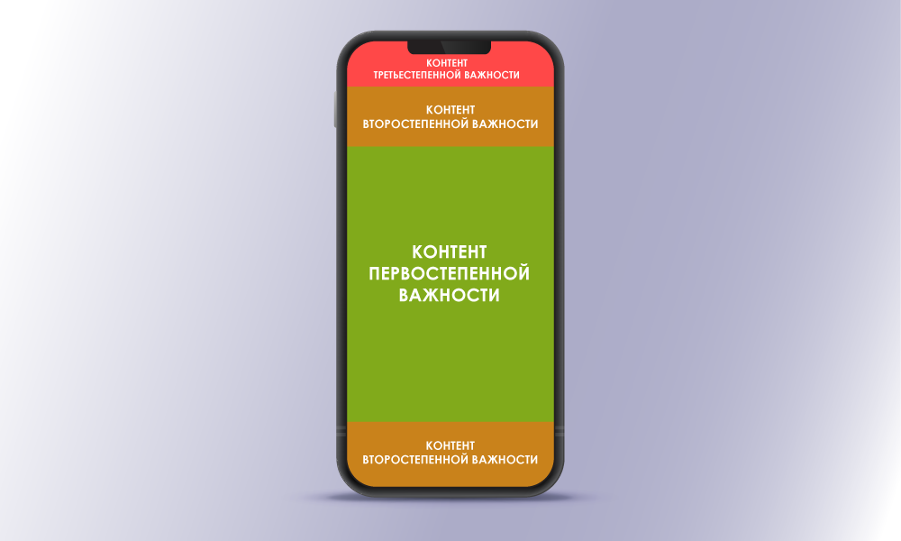
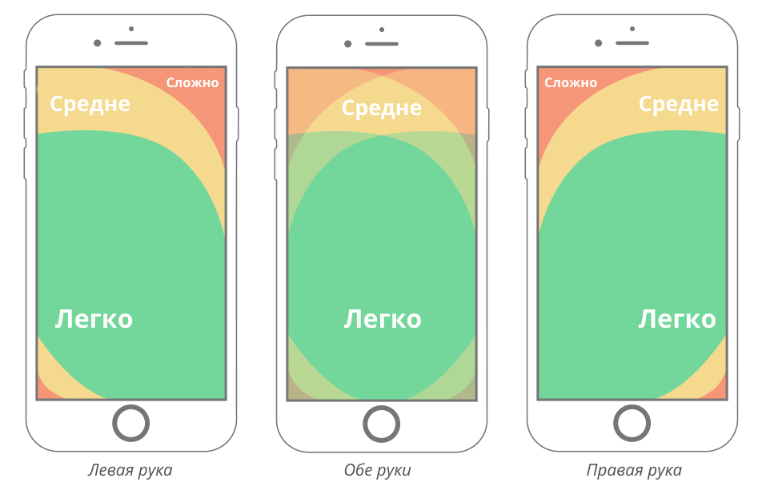
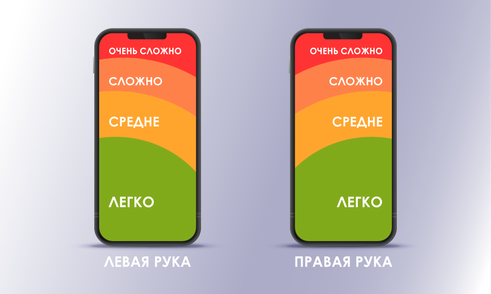
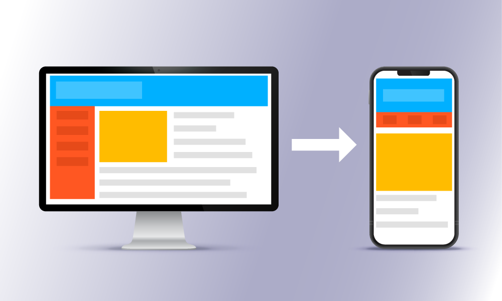

Особливості проектування сайтів для мобільних пристроїв
Невеликі розміри екранів смартфонів диктують свої умови: якщо ви хочете добитися від користувача цільової дії, перш за все потрібно показати елементи, які призведуть до конверсії...
Акцент на змісті
Зручність для користувача
Невеликі розміри екранів смартфонів диктують свої умови: якщо ви хочете досягти від
користувача цільової дії, перш за все потрібно показати елементи, які призведуть до
конверсії. Визначити, що має відображатися на сторінці сайту, допомагає вивчення user
flow. Для різних типів бізнесу можна виявити стандарти поведінки користувачів: навіщо
вони приходять на сайт? що шукають? що спростить їхній пошук? яку дію вони виконають
після того, як знайдуть потрібне?
Наприклад, у діях клієнтів інтернет-магазинів існують такі закономірності:
- вони хочуть знайти товар;
- фільтри допоможуть їм швидше вибрати потрібне;
- їм потрібно забезпечити легкий спосіб повернення до кошика.
Мобільна версія сайту Puma має саме такий класичний набір основних елементів, які відповідають очікуванням користувача:
- вгорі екрану розташована панель з кнопками пошуку, кошика та головного меню;
- картки товару розміщуються у двох колонках, що дає можливість одразу переглядати більше асортименту;
- є інструменти фільтрації та сортування товарів для спрощеного пошуку;
- у самому низу сторінки представлені популярні категорії та товарні рекомендації , які також сприяють вибору.
Відображення сайту Puma на смартфоні
Персоналізовані товарні рекомендації роблять процес покупки на сайті індивідуальним: клієнт бачить те, що відповідає його інтересам і що потенційно готовий купити. В результаті суттєво підвищуються показники конверсії. Це підтверджує наш магазин магазину електронної техніки.
Коли ви визначите необхідний мінімум елементів, які допоможуть клієнту здійснити
цільову дію, переходьте до додавання додаткового контенту. Для магазину це може бути
інформація про доставку, відгуки, контакти і т. д. Puma так ненав'язливо інтегрувала в
область перегляду банери про акції, що діють, що вони не переривають сеанс взаємодії,
а лише повідомляють користувача, як зробити покупки більш вигідними.
Інтерфейс новинних, розважальних та навчальних ресурсів має включати свої обов'язкові
тригери. Наприклад, для блогу такими елементами можуть бути кнопки реєстрації,
підписки, оцінки статті, форма відправлення коментарів, рекомендовані на тему
матеріали… Вдалий приклад такої реалізації – сайт AdMe.ru. У верхній частині сторінки
тут розташований рядок з іконками меню, авторизації та підписки (яка зникає при
скролі), а нижче – кнопки основних дій зі статтею: оцінка, коментар, збереження у
вибране, шерінг. Крім того, під кожною фотографією та наприкінці статті є кнопки
соцмереж, які дозволяють моментально поділитися контентом. Ну і насамкінець –
наприкінці сторінки відвідувачам пропонують до прочитання інші захоплюючі матеріали,
які, напевно, затримають їх на сайті.
Інтерфейс сайту AdMe на мобільному
Візуальна ієрархія контенту
Поліпшити взаємодію користувача з сайтом можна в тому випадку, якщо ви знатимете не
тільки що показувати, але і як показувати. Візуальна ієрархія контенту передбачає
виділення його найважливіших складових та розташування їх у особливих зонах уваги
користувачів смартфонів. При цьому дизайнери можуть скористатися психологічними
прийомами, щоб сфокусувати увагу відвідувача на потрібних елементах.
На практиці в більшості випадків це виглядає так:
- найбільш важливий контент розташований у центральній частині екрана;
- елементи другорядної значущості можуть розміщуватися і над, і під основним змістом;
- найменш пріоритетний, але все ж таки необхідний, контент знаходиться в самій верхній частині сторінки.
Таке розташування елементів можна було помітити на прикладах сайтів Puma та Adme у попередньому пункті.
Оптимальне розміщення контенту на екрані смартфона
Існують і детальніші схеми ергономіки мобільних пристроїв, засновані на "правилі великого пальця". Цей підхід будується на дослідженнях про те, як користувачі тримають смартфон у руці та яким чином керують ними. Виявилося , що 75% людей торкаються дисплея лише одним великим пальцем. Так дослідники сегментували зони екрану мобільних телефонів за простотою взаємодії з ним пальцями. Спочатку у статті 2016 року було запропоновано наступну карту зручності управління:
Одна з перших схем простоти керування смартфона за допомогою великого пальця
Сьогодні, коли діагональ більшості смартфонів збільшилася, модернізована схема доступності екрана виглядає так:
Простота керування пальцями на сучасних смартфонах
Такі зміни вже відбилися у тенденціях веб-дизайну. Наочний приклад розглянемо у наступному пункті.
Простота навігації
Хороша навігація мобільною версією сайту – річ вимоглива. Вона має забезпечувати
ідеальну подорож користувача ресурсом і водночас вміщуватися в компактні елементи
інтерфейсу, щоб не відволікати від основного контенту.
Багато користувачів уже звикли до стандартного оформлення більшості сайтів та
інтуїтивно шукають у рядку кнопку з трьома паралельними горизонтальними лініями. При
натисканні іконки відкривається перелік доступних розділів веб-сайту. Класичне
меню-гамбургер, як правило, легкодоступне, добре помітне і займає небагато місця на
екрані. Утім деякі UX-дизайнери дотримуються думки, що користувачі зазвичай рідко
взаємодіють із тим, чого не бачать. Дослідження показали, що прихована навігація
збільшує складність пошуку контенту на 21% порівняно зі станом видимої навігації.
Альтернативою гамбургерному меню часто стають панелі вкладок (зазвичай вони постійно
відображаються на сторінці) та панелі навігації (як правило, зникають при скролі).
Мінусом цих варіантів може бути складність відображення всіх опцій, якщо їх багато.
Тому дизайнери часто виносять до авангарду панелей найбільш необхідні для користувача
елементи, а решту приховують у меню інших типів.
User-friendly інтерфейс
Турбота про зручність користувача під час серфінгу на сайті – ще один обов'язковий
атрибут концепції Mobile First. Забезпечивши добре опрацьований UX, можна
розраховувати на повторні відвідування клієнта у майбутньому. статті ми вже навели
чимало статистичних даних, і ось іще один важливий факт: 48% респондентів вважають
простоту використання мобільного сайту його найважливішою якістю.
Під час проектування інтерфейсу, орієнтованого на мобільні, треба враховувати не лише
обмежений простір дисплея, але й інші особливості використання смартфона, наприклад
керування через Touch-скрін. Нижче ми наведемо основні принципи, які забезпечують
успішний досвід взаємодії з мобільною версією сайту.
Адаптація контенту до ширини області перегляду
На десктопі є широке горизонтальне поле для візуалізації контенту: можна використовувати кілька стовпчиків, оформляти ефектні вітрини та розкладки. На мобільних пристроях, де екран суттєво вужчий, основна дія під час перегляду сторінок – прокручування вгору-вниз. Оптимальний варіант для відображення контенту – 1-2 колонки, а якщо треба розмістити елементи горизонтально – забезпечте їхній перегляд простим свайпом одним пальцем.
Різниця розміщення контенту на десктопі та на мобільному
Правильна типографіка
Щоб користувач не напружував зір під час перегляду сторінки, текст має бути достатнього розміру і водночас не займати пів екрана. Для мобільних версій сайтів рекомендується застосовувати шрифт не менший ніж 12 px, а як основний вибрати 14-16 px. Крім того, використання більше ніж трьох шрифтів на сторінці може сповільнювати її завантаження, а це вже суперечить основам Mobile-First.
Орієнтація на сенсорне керування
При використанні десктопного ПК або ноутбука у користувача є миша з точним курсором, а у користувачів смартфонів – тільки їхні пальці (за рідкісним винятком використання стилуса). Це означає, що треба унеможливити натискання неправильного посилання або кнопки. Для цього дотримуйтеся таких рекомендацій: мінімальний розмір клікабельних елементів – 26 px, оптимальний – 40-44 px, а відступи навколо них – не менші ніж 10 px.